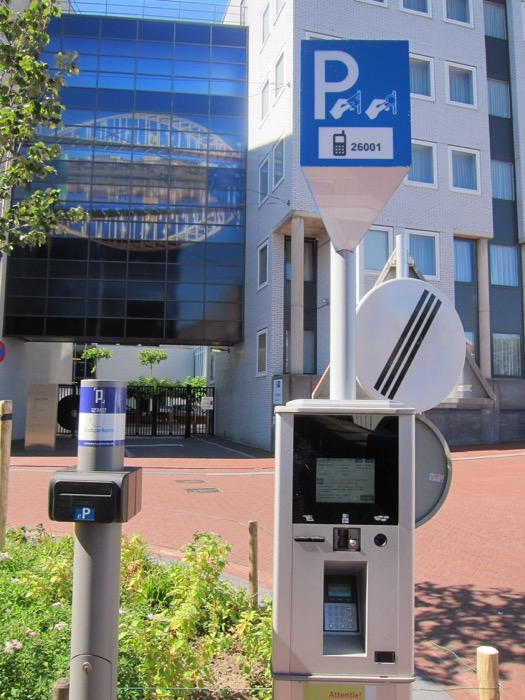
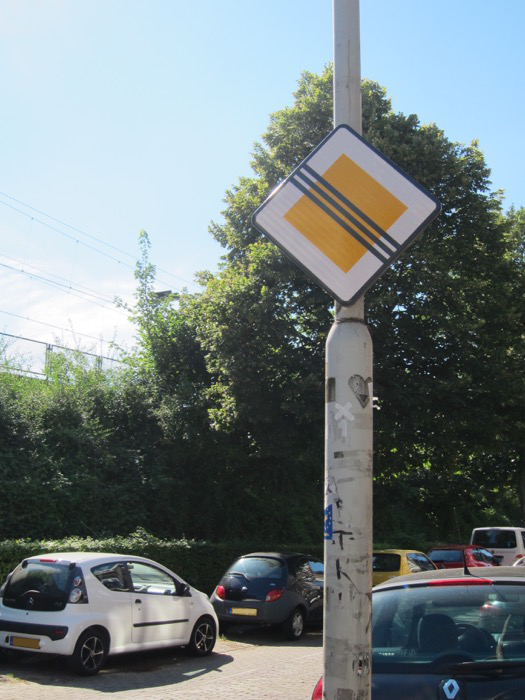
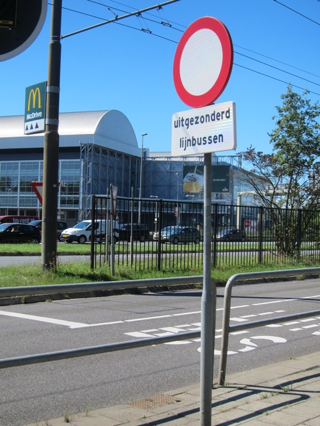

(While this page is already public, this page is not yet ready. It will probably be hosted somewhere else when this page is 'ready'. If you have reached here, welcome anyway!)
Driving
Foreign drivers would have to get used to the huge amount of cyclists in the Netherlands; driver training in the Netherlands place a huge emphasis on sharing the road with cyclists. There is the usual traffic jam in the Netherlands, as in other Western European countries. At least the roads are well maintained, and designed well. There many scenic roads in the Netherlands (but don't come expecting mountain roads). I have driven in a number of countries in Europe and Oceania; I find driving in the Netherlands pleasant.
There are many traffic legal issues discussed in this section. I try to describe what I know as accurately as possible, but I cannot be held accountable for the accuracy of data. Rules can change quickly; please check with official sources elsewhere.
Car-sharing
Autodelen 'car sharing' is an option if you stay in the Netherlands long enough, if you don't own a car. There are two types of car-sharing companies/platforms.
With the first type, you become a member of a company. After your application has been approved, you can go to their website/app, and book a vehicle for a period of time, in minutes or hours or days (depending on the company). Vehicles of the company can be found at on-street locations. You are charged by the amount of time and distance used.
Greenwheels has the widest distribution of vehicles in the Netherlands. Many are placed near train stations. You have to return the vehicle back to its dedicated parking spot at the end of the ride.
A Greenwheel car in its own reserved parking spot. (If someone parks their vehicle in your Greenwheels parking spot, park in a public parking spot nearby and ring Greenwheels for instructions.)
ConnectCar is similar to Greenwheels. Cars are available in bigger cities in the west of the country.
car2go: in the Netherlands it operates only in Amsterdam. Some vehicles can only be picked up with their app. At the end of your ride, you can leave the vehicle at any public carpark spaces within their operating area, or at certain dedicated spots. Their cars only have two seats.
With the second type, the company connects a hirer with another person's vehicle, typically vehicles that are sitting vacant most of the time.
SnappCar, connects hirers with other people's private cars.
MyWheels, connects hirers with other people's private cars.
TrexCar, currently operating in Nijmegen, connects hirers with second-hand cars sitting idle at car dealers. 'You get a car nearby within 5 minutes'.
Foreign cars and driver's licence
Another way to visit European Netherlands is driving in from neighbouring countries. The Netherlands has a good road network. Many vehicles with foreign registration plates drive on the roads of the Netherlands. Other than vehicles with Dutch registration plates, vehicles with German or Belgian registration plates are also commonly seen. Right-hand-drive vehicles from UK are sometimes seen (e.g., visiting Commonwealth war graves). The furthest vehicles I have seen on the streets of European Netherlands are from Azerbaijan, Dubai, and Aruba (!). (I do not know what the legal situation is, for vehicles coming in from outside European Union/Schengen Zone.) For EU citizens visiting another EU country for less than 6 months, you can keep the original registration plate. For visits longer than 6 months, you have to change the registration plate to that of the destination country (see here). In European Netherlands, when you register as a resident of the Netherlands and if you come with a foreign vehicle, you must change the registration of the vehicle to the Netherlands within 14 days. See what RDW has to say about regulations on importation of vehicles into the Netherlands when you move to the Netherlands.
Driver's licences from other EU countries and EFTA countries are valid in the Netherlands. I do not know what the situation is with licences from other countries. At rental car companies, non-European driver's licences are generally accepted if it is in Dutch or English. Inquire with the rental car company whether you need an International Driving Permit or not. If you are moving to, or are living in, the Netherlands, see what CBR says about the validity of your foreign driver's licence. (Apparently all parts of the Dutch Caribbean are considered 'other countries'.)
Safety equipment and winter tyres
It seems like that none of the safety equipment that are obligatory in other European countries are obligatory in the Netherlands. A gevarendriehoek 'emergency triangle' and a veiligheidsvest 'safety vest' are not obligatory in the Netherlands. However, it is still recommended to have them in your car. For instance, in an emergency, you have to use either waarschuwingsknipperlichten 'hazard warning lights' or a gevarendriehoek 'emergency triangle'; if the lights fail (e.g. after a crash), then you must have, and use, emergency triangles. Another thing handy to have are reservelampen 'spare bulbs' (which are not obligatory): you can receive a fine for not having working headlights and taillights. Other things that are not obligatory include brandblusser 'fire extinguisher', veiligheidshamer 'safety hammer', and verbanddoos 'first-aid kit'. See ANWB's list of safety equipment that are obligatory in other European countries.
Winter tyres are not obligatory in the Netherlands. In nearby countries:
Belgium: not obligatory
Luxembourg: obligatory
Germany: obligatory
France: obligatory when announced
Road tolls and environmental zones
Nearly all roads are toll-free for cars in the Netherlands. There are only two toll-tunnels in the Netherlands, both underwater tunnels: the Westerscheldetunnel in southern Zeeland Province (the long north-south tunnel to the west of Terneuzen), and the Kiltunnel in southern Zuid-Holland Province (the short east-west tunnel to the southwest of Dordrecht).
Toll for trucks (≤ 12 tons) nationwide: see Eurovignette.
In nearby countries:
Belgium: nearly all roads are toll-free for cars. There is one underwater toll-tunnel in Belgium: the Liefkenshoektunnel in Antwerpen Province (the cross-river tunnel downriver/northwest of Antwerp; part of the Antwerp ring route R2.). Toll for trucks (<3.5 tons GVW) nationwide: Viapass.
Luxembourg: roads are free for cars. Toll for trucks (≤ 12 tons) nationwide: Eurovignette.
Germany: basically all roads are free for cars. There are talks of introducing tolls for cars with foreign registration plates in the form of a sticker. Toll for trucks (≤ 7.5 tons) nationwide: Toll Collect.
France: most motorways are tolled, and you pay at tollbooths. There is an automatic payment system. There are also other payment methods. For drivers from Britain going to Benelux via Dover–Calais or Dover–Dunkirk, the following are some toll-free sections of French motorways (please make contributions to the French economy in other ways; Dunkirk is Dunkerque in French and Duinkerke in Dutch; Lille is Rijsel in Dutch; the E-road numbers are better known in Belgium):
A 16: Boulogne-sur-Mer – Calais – Dunkerque – Belgian border (parallel to the coast); E40
N 225/A 25: Dunkerque – Lille (parallel to the Belgian border); E42
(All motorways in the Lille area are toll-free; there are a number of shorter motorways connecting the ones listed here)
A 22: Lille – Belgian border to the north; E17
A 27: Lille – Belgian border to the east; E42
A 23: Lille – Valenciennes (parallel to the Belgian border)
A 2: Hordain – Valenciennes – Belgian border to the northeast; E19
Many city centres in the Netherlands have milieuzones 'environment zones'. Vehicles that are too polluting are not allowed to enter a milieuzone. Currently (2016), 13 cities have milieuzones that disallow diesel trucks weighing over 3500 kg to enter if they only comply with Euro 0, Euro 1, Euro 2, or Euro 3 emission standard. These 13 cities are:
Noord-Holland: Amsterdam
Zuid-Holland: Rotterdam, Den Haag (The Hague), Rijswijk, Delft, Leiden
You are now entering a Milieuzone. This one is only for trucks.Milieuzone straightahead for trucks; if you do not qualify, you have to go right.
In addition, five cities – Utrecht, Amsterdam, Rotterdam, Leiden, and Nijmegen – currently have, or are introducing, or are studying the possibilities of, restrictions for older benzine cars, diesel cars, scooters, and/or mopeds into their city centres. See details from ANWB. (Study these rules carefully if you are purchasing a vehicle that you intend to use in the Netherlands.)
In neighbouring countries:
Belgium: according to the Flemish government: Antwerp is introducing a lage-emissiezone (LEZ) 'low-emission zone' in 1 February 2017, and Gent is introducing a LEZ in 2020; Brussels Captial Region (outside of their jurisdiction) is introducing a LEZ in 2018.
Germany: a great number of cities have an Umweltzone 'environment zone' in their city centres; to enter such zones, you need an Umweltplakette, which comes in the form of a round sticker. Basically all cities now require a level 4/green sticker (the highest level). Other than in Germany, environment stickers can also be organised in neighbouring countries, and on the internet. It is usually cheaper to do it in Germany, at places like TÜV. (They can handle cars from other European countries. But then you would need to find a branch of TÜV or a similar place outside an Umweltzone if you don't already have an Umweltplakette...). The following are some information in English.
France: there are already restrictions on trucks in Paris. France has recently introduced vignettes (sticker) for different emission levels for all motor vehicles. In Paris, the sticker will become compulsory in its zone à circulation restreinte 'restricted traffic zone' from 1 January 2017. Older cars with bad emission levels will not be allowed into the zone. (Something like that...)
There are somewhat fewer speed limit signs in the Netherlands than countries with British- or American-type road infrastructure; motorists in the Netherlands are expected to know the default speed limit based on other information, e.g. the type of vehicle they are driving, the type of road that they are driving on, road markings, whether they are driving inside or outside built-up areas. The speed limits outlined below apply only to private motor cars; other types of vehicles could have lower speed limits.
There are two types of fast highways in the netherlands. A motorway/controlled-access highway is autosnelweg, and the maximum speed limit is 130 km/h, unless otherwise indicated. Autosnelweg is also known as snelweg, or sometimes autostrade in Flanders, or sometimes autobaan in some parts of Netherlands closer to Germany. The beginning is signaled by sign G1, and the end is signaled by sign G2. Only vehicles faster than 60 km/h may enter the autosnelweg (i.e. no mopeds, bicycles, pedestrians etc.) Autosnelwegen are fully grade-separated, physical barriers separate opposing traffic flows, and there are at least two lanes each way. The road surface of Dutch autosnelwegen has excellent water-drainage properties (flooding is the number-one taboo in the Netherlands), off ramps are generally wide and have gentler curvatures, allowing motorists to decelerate less abruptly. (Dutch autosnelwegen are better than German Autobahnen in these two regards.) This is a map of speed limits on (nearly all) Dutch motorways from Rijkswaterstaat.
A limited-access highway is autoweg, and the maximum speed limit is 100 km/h, unless otherwise indicated. The beginning is signaled by sign G3, and the end is signaled by sign G4. Only vehicles faster than 50 kh/m may enter the autoweg (i.e. no mopeds, bicycles, pedestrians etc.). Autowegen often have autosnelweg-like properties, but sometimes there are traffic lights, large roundabouts, and sometimes there is no physical barrier between opposing traffic.
If you are not on an autosnelweg or an autoweg, then you need to know whether you are inside or outside a built-up area. The traffic signs H1 and H2 are not there to say 'Welcome to X!' and 'Farewell!' (often places would put up signs saying so); signs H1 and H2 tell you more than just the name of the city/village/locality: they tell you that you are entering and leaving a bebouwde kom 'built-up area'.
Outside built-up areas:
Stroomweg, with double white centrelines (continuous or broken), and a continuous green centreline sandwiched between the two double white centrelines: 100 km/h, unless otherwise indicated
Gebiedsontsluitingsweg, with double white centrelines (continuous or broken): 80 km/h, unless otherwise indicated
Erftoegangsweg, single or no centrelines: 60 km/h, unless otherwise indicated.
Inside built-up areas, the speed limit is 50 km/h, unless otherwise indicated.
There are also many 30-zones: it is signaled by zone sign A1 (30) when you enter, and zone sign A2 (30) when you leave. In the entire zone, the speed limit is 30 km/h. Most usually, there are no give-way/stop signs at the intersections within a 30-zone; you have to be careful at each intersection, and give way to all traffic coming from the right (including mopeds/bicycles), even if you are going straight ahead. (This is the usual give-way rule at interserctions with no give-way/stop signs and lines.)
Zone sign A1 (30) – you are now entering a 30 km/h zoneZone sign A2 (30) – you are now leaving a 30 km/h zone
Sign G5 indicates that you have now entered an erf, and sign G6 indicates that you are now leaving an erf. The speed limit is 15 km/h. Pedestrians can walk the entire width of the street, and, e.g., children can play in the middle of the street. A motorist must not hinder pedestrians in an erf. Otherwise, normal give way rules apply.
Bottom: sign G5 – you are now entering an erf; top: zone sign A2 (30) – you are now leaving a 30 km/h zone. An erf sign can also be not accompanied by other signs.Bottom: sign G6 – you are now leaving an erf; top: zone sign A1 (30): you are now entering a 30 km/h zone.You might also encounter these in an erf.
In summary, the following are the default speed limits for private cars in the Netherlands (when there are no overriding signs):
autosnelweg: 130 km/h
autoweg: 100 km/h
Outside built-up areas:
two white centrelines with a continuous green line sandwiched in: 100 km/h
two white centrelines with no green line: 80 km/h
one/no centreline: 60 km/h
Inside built-up areas: 50 km/h
30-zone: 30 km/h
erf: 15 km/h
The following are summaries of basic speed limits in nearby countries:
Belgium:
autosnelweg/autoroute/Autobahn: 120 km/h
autoweg/voie express/Autostraße (opposing traffic separated by physical barriers, at least two lanes each way): 120 km/h
Outside built-up areas: 90 km/h
Inside built-up areas: 50 km/h
Luxembourg:
Autobunn/autoroute/Autobahn: 130 km/h, or 110 km/h when it rains
Schnellstrooss/voie express: I don't know
Outside built-up areas: 90 km/h
Inside built-up areas: 50 km/h
Germany:
Autobahn: by default there is no speed limit for ordinary cars (talking about speed limit on the Autobahn in Germany is like talking about gun control in USA). The advisory speed limit is 130 km/h; if you drive above that and are involved in an accident, your insurance could potentially be compromised, even if you are not at fault. Even if you were driving at 160 km/h, there would still be cars overtaking you in a whoosh. In reality, about 50% of the motorway distance in Germany has obligatory speed limit signs for 130 km/h or lower.
Autostraße: Germany does not have specific speed limit for Autostraßen. Like Autobahnen, if an Autostraße is outside built-up areas, has opposing traffic separated by physical barriers, and has at least two lanes each way, then there is no speed limit. Otherwise, it has the general outside-built-up-area speed limit of 100 km/h. In reality, nearly all Autostraßen have obligatory speed limit signs, often 100 km/h.
Outside built-up areas: 100 km/h
Inside built-up areas: 50 km/h
France:
autoroute: 130 km/h, or 110 km/h when you have to use windscreen wipers
voie express: 110 km/h, or 100 km/h when you have to use windscreen wipers
Outside built-up areas: 90 km/h, or 80 km/h when you have to use windscreen wipers
autoroute inside built-up areas: 90 km/h
section aménagée inside built-up areas: 70 km/h
Inside built-up areas: 50 km/h
Route numbering
Autosnelwegen have an A-number; A stands for autosnelweg. The Netherlands has an extensive network of A-roads. A is followed by one numeral, two numerals, or – in less than 10 cases – three numerals (with the largest being A348). For instance, A1 runs from Amsterdam west to the German border, A10 is the Amsterdam ring road, A270 is a short section of motorway east of Eindhoven. There are weak tendencies, but there is no strong patterning of the numbering system. See English Wikipedia's list of motorways in the Netherlands.
Other than the A-road network, there is also the N-road network. There is a multiple-choice question in the Dutch driving theory exam; it goes something like: 'what does N stand for?' The choices are: a. nationale weg (national road); and b. niet-autosnelweg (not motorway/non-motorway).
The correct answer is... b. niet-autosnelweg 'non-motorway'. Autowegen have N-numbers, but N-roads are not necessarily autowegen; N-roads can also be ordinary roads. Non-motorway continuations of A-roads (motorways) have the same N-number. For example, A9 in Noord-Holland continues further north as N9. The highest-numbered A-road, A348, continues a long way further north as N348. Numbers up till 399 are for inter-provincial roads; numbers from 401 to 999 are divided into blocks for each province. See the Dutch Wikipedia's page on provinciale weg for N-roads in the Netherlands.
The following is an example of signage of A- and N-roads: an A-number sign has white wrting on a red rectangle, whereas an N-number sign has black writing on a yellow rectangle.
Other than A- and N-roads, there are also S-routes in some cities (S stands for stad 'city').
Parallel to the A- and N-numbers are the E-numbers for the International E-road network. The E-road numbers are well signposted (on the routes themselves), but not well known amongst road-users in the Netherlands.
Situation is nearby countries:
Belgium: Motorways are primarily known by their international E-numbers. An E-number sign has white writing on a green rectangle. There is also a national system for road numbering, but they are generally known only if an E-number does not exist.
A for autosnelweg/autoroute/Autobahn 'motorway'; A-roads can also be autowegen/voies express/Autostraßen. Black writing on a white rectangle.
R for ringweg in Dutch. Ring roads in cities and towns; can be of any road-type. Black writing on a white rectangle.
B for bretel in French. Link roads; perhaps you won't see signage of these rare types of road.
N. Can be of any road-type. White writing on a blue rectangle.
D for route départementale. Black writing on a yellow rectangle.
Fuel and parking
The situation with fossil fuel in the Netherlands is similar to other Western countries. Petrol (Euro 95, Superplus 98) and diesel are the most common. LPG, natural gas (aardgas), E10 (blue one) and E85 are a little bit harder to find. Searching on the internet for something like brandstof 'fuel' or brandstofprijzen in Nederland 'fuel price in the Netherlands' will give you a list of websites that compare the fuel price at petrol stations in the Netherlands.
Germany, Belgium, and France have cheaper petrol than the Netherlands. Luxembourg has cheaper petrol than all its neighbours. See what ANWB says on fuel price in Europe.
For electric cars, if you need to use public charging facilities, there are plenty of dedicated parking spots with public electric charging facilities, on streets or in carparks. They belong to various companies, and you need to have a subscription with a comapny before you can use their charging apparatuses. This is a list of electric car charger companies operating in the Netherlands (they also have lists of companies in many other countries). Also try searching for something like elektrische auto oplaadpunten in Nederland 'electric car charge-up-points in the Netherlands' on the internet, and there are a number of websites with electronic maps of charging point, and information about the companies that own the individual charging points. Companies that operate in the Netherlands often also operate internationally in at least Belgium and Germany, so Dutch electric cars can also use charging facilities in neighbouring countries, and vice versa.
Two carparking spaces with charging facilities. opladen elektrische voertuigen 'charge electric vehicles'.Naast de kosten voor het opladen, bent u hier ook parkeergeld verschuldigd. ≈'Besides the costs of charging, you also have to pay for parking here'. Betalen kan via de telefoon, pas of betaal bij de parkeerautomaat ≈'Payment can be made via mobile telephone, card or pay at the parking machine'.Two cars charging. They both have a residents' parking permit (the yellow-green card on the windscreen).
Parkeren 'parking' is mostly like that in other places in Europe. For public paid parking, there is parkeren op straat, which is usually more expensive than parkeren in parkeergarage. Parking can be paid by cash, bankcards, credit cards, through mobile phone, and/or app. The website of each gemeente 'council' has details on parkeren within their boundaries.
An on-street parking machine. At this location, you can pay with coins, bankcard, credicard, mobile phone, parking card (the receptacle is on the left), or app (with the last three, you need to have a scription with a company first). 
Some places require the use of a Parkeerschijf 'parking disc'. You set the time of arrival on the parking disc. (I have read that:) You can set it to the closest half hour in the future, e.g. if you arrive at 10:20, you can set the disc to 10:30.
The blue icon in this figure is the parkeerschijf icon. 2 uur gratis parkeren voor coop klanten '2 hours free parking for coop customers', Parkeerschijf verplicht 'parking disc compulsory', Geopend Ma. t/m Za. 06.00–23.00 uur Zo. 10.00–20.00 uur 'Open Mon. to Sat. 6am–11pm Sun. 10am–8pm'
If you live in a city where parking is restricted, you might want to apply for things like:
parkeervergunning bewoners 'residents' parking permit' (the waiting list can be very long)
parkeervergunning bezoekers 'visitors' parking permit' for your visitors
gehandicaptenparkeerplaats bij woning 'handicap parking space at home'
laadpaal aanvragen 'ask for (e-vehicle) charging pole'
ontheffing rijden in het voetgangersgebied 'exemption for driving in pedestrial area' (e.g. if you live inside one)
Some parking-related signs:
sector A vergunninghouders '(parking for) sector A permit holders' Nooduitgang geen auto's plaatsen 'Emergency exit, do not park cars (here)' (geen is a negator)Uitrit Vrijlaten 'Keep driveway free' (do not park here)Vrij 'Free': there are unoccupied parking spaces here. ('Free' does not mean no cost. IJ)Pay-and-display zone. herhaling 'repetition', as in the parking-machine zone started somewhere else, this is just a reminder. donderdag 18–23 h zaterdag 09–23 h zondag 12-23 h 'Thursday 6–11pm Saturday 9am–11pm Sunday 12–11pm'
Other things about Dutch driving infrastructure and culture
Before the Netherlands, my driving experience was mostly in New Zealand and Australia. The following are some things that I think are noteworthy about the driving infrastructure and culture in the Netherlands, from my NZ/AU background.
For drivers who are used to left-hand-trafic / right-hand-drive vehicles:
The Netherlands (and the rest of Continental Europe) has right-hand traffic: traffic go on the right-hand-side of the road, and cars have left-hand configuration. This is the case in most of the world. People overtake on the left, and roundabouts go anti-clockwise.
Remember: if you are on a narrow road, and if you suddenly see an oncoming car, move to the right, not left. If you have to change gear suddenly, there is no use jerking your left arm; you would just bang your left arm on the door. The gearstick in on your right.
Right-hand-drive cars from UK are sometimes seen in the Netherlands. If you drive a right-hand-drive vehicle from Great Britain/Ireland/Isle of Man/Jersey/Guernsey/Malta/Cyprus in Continental Europe, you need a passenger to your left to look properly whether you can safely overtake or not, on roads where you would expect oncoming traffic. (It is good to have a passenger on your left to look out for possible dangerous situations in general.) The right-hand-drive vehicle needs headlamp beam converters. For UK and crown dependencies, if the registration plate does not have a country identifier on the left which says exactly GB, or GBA/GBG/GBJ/GBM, then you need a seperate country-identifying sticker, something like this.
It is very easy to forget to drive on the right-hand-side after routines like getting up in the morning, or leaving a petrol station. An aid like this might be useful.
As a pedestrian, remember to look left first, and then right, and cross only when both sides are clear.
The following are some other comments:
An abridged version (January 2013) of the Dutch 1990 Traffic Rules and Signs Regulations (RVV 1990) in English is here. (Check with Rijksoverheid to see whether that is the most recent version.)
You give way to the right (unless there are other traffic signs/lights that overwrite that).
This 'give way to the right' rule is important: there are more intersections with no giveway/stop signs than you might expect. Firstly, there are the 30-zones (also see above): usually, there are no giveway/stop signs at the intersections within a 30-zone; that means that you have to slow down and be careful, and give way to all traffic (including cyclists) coming in from the right at an intersection, even if you are going straight ahead.
Some roundabouts, and some roundabout-lookalikes (which are in fact circular roads), require you to stop in the middle of it. The following is one example; because there are no giveway/stop lines, you have to slow down or stop in the middle of the roundabout and give way to any vehicles coming in from the right. (A reminder that roundabouts go anti-clockwise.) If you enter a roundabout without a give-way/stop sign, it is probable that the other enterences also lack give-way/stop signs, so be careful. (Maybe you have to press 'View larger map', and specify 'labels off' from the menu to see clearly.)
The following is another example. In this circular road (with no lanes), there are traffic lights for both entrences and exits; you have to stop in the middle of this circular road (i.e. right in front of the lights, or behind queues formed in front of it) if the lights at an exit is red.
There are often pedestrians and cyclists to your right. In the Netherlands, remember that when you turn right, you have to give way to cyclists and pedestrians going straight ahead . Look extra carefully for cyclists and pedestrians whenever you turn. (This give way rule might be different in other European countries.)
Differences in road signs: the differences are not huge; a tourist from outside Europe would probably understand most of the road signs in the Netherlands. The road signs in New Zealand, Australia, Republic of Ireland, USA, Canada etc. belong to one type, where warning signs are yelow diamonds with black border. The Netherlands and the other European countries, including UK and Turkey (and South Africa, etc.), belong to another type, where warning signs are white upright triangles with thick red border. See this list of road signs in the Netherlands, and this comparitive list of road signs in European countries. (These are unofficial sources; please check with offical sources.)
A yellow diamond with thick white borders (sign B1) signifies a voorrangswegpriority road; you have priority over traffic coming in from side streets at this intersection. This sign is placed near every intersection where you have priority. Within built-up areas, the sign is placed before an intersection. Outside built-up areas, it is placed after a sealed intersection. When priority is canceled (sign B2), you need to give-way at the next intersection.
Sign B1: priority roadSign B2: end of priority road 
A row of inverted triangles painted on the ground: these are called haaientanden 'shark's teeth', equivalent of a give-way sign. They are also commonly found on bicycle paths.
The word uitgezonderd means 'except'. In the following example, the top sign (white upward arrow with blue background; sign C3) signifies that this is a one-way street; the bottom sign says uitgezonderd 'except' lijnbussen '(passenger) fixed-route busses' and bicycles. You can expect buses and bicycles in both directions, while you, as a car-driver/motorcyclist/moped-rider, can only go one way.
Top sign: white circle with red border (sign C1) – no entry in both directions for vehicles, horse-riders, or hearded animals; bottom sign: uitgezonderd lijnbussen 'except for (passenger) fixed-route buses'. In other words, this is a dedicated busway in both directions.

The word na means 'after'. In the following example, the top sign (white horizontal bar on red circle; sign C2) signifies no-entry, one-way street in the other direction; the bottom sign says na 75m. You can still drive in for another 75m before you must not go any further.
comma is a decimal point
Always be careful where you have to give-way to cyclists. In this example, there are actually two separate places where you have to give way. At the first give-way sign, the sign underneath warns you that cyclists may come from either direction. After you have safely crossed the first give-way sign and bicycle path, at the second give-way sign you must turn right. (Of cause, also look out for pedestrians.)
Dutch drivers often park on the wrong side of the road. Apparently this is legal; driving instructors do that too. (I've heard that this is not the case in some other European countries.)
There are stories of Dutch drivers having to return without reaching their intended holiday destinations in Switzerland/Austria etc.; their Dutch vehicles cannot cope with the gradients in Southern Germany before the Alps. (Obviously, not all cars sold in the Netherlands are like that, but it is something to consider if you purchase a vehicle in the Netherlands.)
Because of the relative lack of altitudinal difference in the Netherlands, drivers often don't bother with handbreaks/ never use handbreaks/ don't know how to use handbreaks properly. Practical exams do require candidates to perform hill-stop and hill-start, but in most parts of the country, 'Dutch hills', at best. Manual-gear drivers in the Lowlands have different gear-changing habits than drivers who are used to driving in the Alps.
The Netherlands has very good driver education. (Exams were certainly much more stringent in the Netherlands than it was in New Zealand many years ago, except for the lack of 'real' hill-stop/-start.) There is strong emphasis on how to share the road safely with cyclists. The vast majority of drivers know not to hog the fast lanes on a motorway. This is especially important when driving on German Autobahnen, where there is often no speed limit.